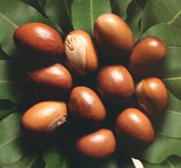

Shea Nut / Shea Butter

[Shi Tree; Shiyiri, Shisu (Mali); Karité (French); Ghariti
(Senegal); Gonja (Niger-Congo); Vitellaria paradoxa obs.
Butyrospermum parkii]
This fruit tree is native across equatorial Africa (not quite touching
the coast on either east or west), but Turkey is now also a major grower.
The flesh of the fruit (about 2-1/4 inches long) is tart, edible, and
nutritious, but rather thin, surrounding a large seed. The seed is the
primary interest, as it yields a large amount of oil. This oil, very high
in saturated and monounsaturated fats, is called shea butter. It is
solid at a cool room temperature, but this solidity is quite variable
depending on the saturated / monounsaturated ratio provided by individual
trees. Some separates, so liquid oil (mostly monounsaturated oleic acid)
can be siphoned off.
Unrefined Shea Butter has an antioxidaent content similar to olives,
with a profile similar to green tea. In the West, shea butter is used
mainly for cosmetics, but in equatorial Africa it is a major cooking
oil, and is also used to make soap. IUCN Red List VU (Vulnerable).
Photo by LC-Seminar Uni Hohenheim contributed to the
Public Domain.
More on Sapotes.
 Shea butter is traditionally made by hand, a very labor intensive process.
The seeds are shelled out of the fruit, then cleaned, followed by
crushing and grinding, then separation by simmering water. While this
is still done in the villages of Africa, commercial processing for export
is increasingly mechanized and often uses hexane extraction.
Photo by Cathkidston distributed under license
Creative Commons
Attribution-ShareAlike v3.0 Unported.
Shea butter is traditionally made by hand, a very labor intensive process.
The seeds are shelled out of the fruit, then cleaned, followed by
crushing and grinding, then separation by simmering water. While this
is still done in the villages of Africa, commercial processing for export
is increasingly mechanized and often uses hexane extraction.
Photo by Cathkidston distributed under license
Creative Commons
Attribution-ShareAlike v3.0 Unported.
Buying: Cans, Jars and Bags of Shea Butter are easily
purchased on the Internet. It is available in Virgin and Naturally
Refined varieties. Most is specifically sold for use as an emollient
for cosmetics and as a body lotion and moisturizer, but better grades
could also be used for cooking.
Storing: Given its composition, this should be a very
stable oil, so, stored in a sealed container away from heat and sunlight,
it should last a year.
Cooking: Given its composition, this should be a
fairly high temperature frying oil with good durability.
Soap: In its native range, and by artisan soap makers,
this oil is used as an ingredient in soaps, usually as a minor
constituent because it as a fair amount of unsaponifiable components
that would make the soap softer and reduce its cleaning power.
There is a proposed grading system. Personally, I'd probably
choose Grade B for cooking, unless I was deliberately replicating
African village cooking.
- A Raw: Unrefined and extracted with water. This
will look like whipped butter, but may have a grayish cast. It has a
nutty aroma.
- B Refined: This grade would be lighter in color
and with less aroma.
- C Highly Refined: This grade would be pure white
with no noticeable aroma, no contaminants and almost no vitamins.
Hexane or other solvents will have been used for extraction.
- D Lower Grade: The lowest grade without
contaminants.
- E Lowest Grade: This grade will have
contaminants.
so_sheaz 161108 - www.clovegarden.com
©Andrew Grygus - agryg@aaxnet.com - photos on
this page © cg1 - Linking to and
non-commercial use of this page permitted